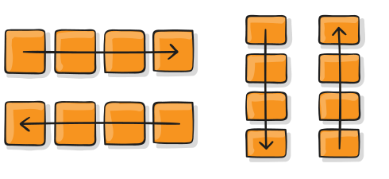
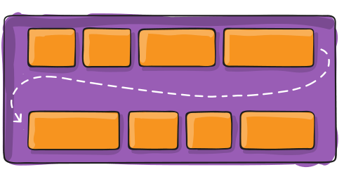
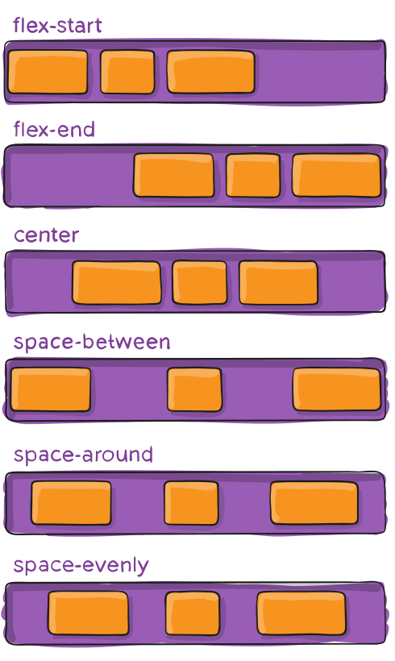
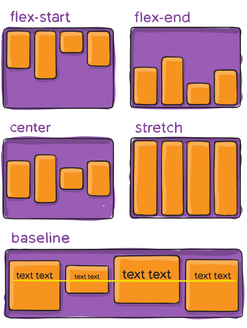
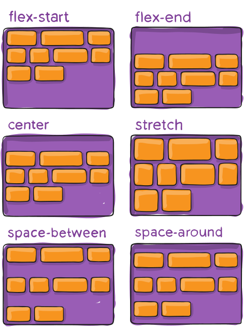
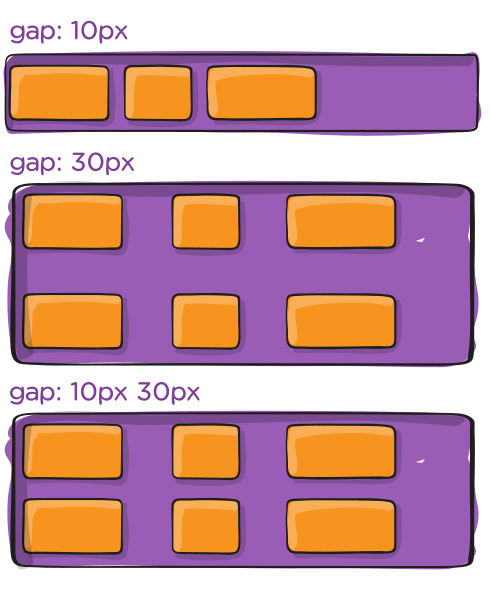

Damit wird die Hauptachse festgelegt und damit die Richtung, in der die Flexelemente im Flexcontainer platziert werden. Flexbox ist (abgesehen vom optionalen Umbruch) ein eindirektionales Layoutkonzept. Stellen Sie sich vor, dass Flexelemente in erster Linie entweder in horizontalen Reihen oder vertikalen Spalten angeordnet werden.

row (default): links nach rechts in ltr; rechts nach links in rtl
row-reverse: von rechts nach links in ltr; von links nach rechts in rtl
column: wie Zeile, aber von oben nach unten
column-reverse: wie row-reverse, aber von unten nach oben
flex-wrap
Standardmäßig versuchen die Flex-Elemente, alle in eine Zeile zu passen. Mit dieser Eigenschaft können Sie das ändern und die Elemente nach Bedarf umbrechen lassen.

nowrap (default): alle flexiblen Elemente werden in einer Zeile angezeigt.
wrap: Flex-Elemente werden auf mehrere Zeilen umbrochen, von oben nach unten.
wrap-reverse: Flex-Elemente werden in mehreren Zeilen von unten nach oben umbrochen.
justify-content
Damit wird die Ausrichtung entlang der Hauptachse festgelegt. Sie hilft bei der Verteilung des zusätzlichen freien Platzes, der übrig bleibt, wenn entweder alle flexiblen Elemente in einer Zeile unflexibel sind oder flexibel sind, aber ihre maximale Größe erreicht haben. Sie steuert auch die Ausrichtung der Elemente, wenn sie die Zeile überfüllen.

flex-start (default): Die Elemente werden zum Anfang der Flex-Richtung hin gepackt.
flex-end: Die Elemente werden in Richtung des Endes der Flex-Richtung gepackt.
start: Die Objekte werden in Richtung des Beginns der Schreibrichtung gepackt.
end: Die Elemente werden in Richtung des Endes der Schreibrichtung gepackt.
left: Die Elemente werden in Richtung des Endes der Flex-Richtung gepackt.Elemente werden zum linken Rand des Containers hin gepackt, es sei denn, das macht keinen Sinn mit der Flex-Richtung, dann verhält es sich wie start.
right: Elemente werden zum rechten Rand des Containers hin gepackt, es sei denn, das macht keinen Sinn mit der Flex-Richtung, dann verhält es sich wie end.
center: Die Elemente werden entlang der Linie zentriert.
space-between: Die Elemente werden gleichmäßig in der Zeile verteilt; das erste Element befindet sich in der Startzeile, das letzte Element in der Endzeile.
space-around: Die Einträge sind gleichmäßig in der Zeile verteilt, mit gleichem Abstand um sie herum. Beachten Sie, dass die Abstände visuell nicht gleich sind, da alle Positionen auf beiden Seiten den gleichen Platz haben. Das erste Element hat eine Einheit Platz am Rand des Containers, aber zwei Einheiten Platz zwischen dem nächsten Element, weil das nächste Element seinen eigenen Abstand hat.
space-evenly: Die Elemente werden so verteilt, dass der Abstand zwischen zwei Elementen (und der Abstand zu den Rändern) gleich ist.
align-items
Damit wird das Standardverhalten für die Anordnung von Flexelementen entlang der Querachse in der aktuellen Zeile festgelegt. Betrachten Sie es als die Version von justify-content für die Querachse (rechtwinklig zur Hauptachse).

stretch (default): Dehnen, um den Container auszufüllen (trotzdem min-width/max-width beachten)
flex-start / start / self-start: Elemente werden am Anfang der Querachse platziert. Der Unterschied zwischen diesen beiden Optionen ist subtil und bezieht sich auf die Einhaltung der Regeln für die Flex-Richtung oder den Schreibmodus.
flex-end / end / self-end: Die Elemente werden am Ende der Querachse platziert. Auch hier ist der Unterschied subtil und bezieht sich auf die Einhaltung der Regeln für die Flex-Richtung bzw. den Schreibmodus.
center: Die Elemente werden in der Querachse zentriert.
baseline: Die Elemente werden so ausgerichtet, dass ihre Grundlinien übereinstimmen.
Die Modifizierungsschlüsselwörter safe und unsafe können in Verbindung mit allen anderen Schlüsselwörtern verwendet werden (beachten Sie jedoch die Browserunterstützung) und sollen verhindern, dass Elemente so ausgerichtet werden, dass der Inhalt unzugänglich wird.
align-content
Dies richtet die Zeilen eines Flex-Containers aus, wenn in der Querachse zusätzlicher Platz vorhanden ist, ähnlich wie justify-content einzelne Elemente innerhalb der Hauptachse ausrichtet.

normal (default): alle flexiblen Elemente werden in einer Zeile angezeigt.Die Elemente werden an ihrer Standardposition gepackt, als ob kein Wert festgelegt worden wäre.
flex-start / start: Elemente werden an den Anfang des Containers gepackt. Das (stärker unterstützte) flex-start berücksichtigt die flex-Richtung, während start die Richtung des Schreibmodus berücksichtigt.
flex-end / end: Elemente, die bis zum Ende des Containers gepackt werden. Das (stärker unterstützte) flex-end beachtet die Flex-Richtung, während end die Schreibrichtung beachtet.
center: Elemente zentriert im Container
space-between: Elemente gleichmäßig verteilt; die erste Zeile steht am Anfang des Containers, die letzte am Ende.
space-around: Die Einträge sind gleichmäßig verteilt, mit gleichem Abstand um jede Zeile.
space-evenly: Die Elemente sind gleichmäßig verteilt, mit gleichem Abstand um sie herum.
stretch: Die Zeilen dehnen sich aus, um den verbleibenden Platz einzunehmen.
Die Modifizierungsschlüsselwörter safe und unsafe können in Verbindung mit allen anderen Schlüsselwörtern verwendet werden (beachten Sie jedoch die Browserunterstützung) und sollen verhindern, dass Elemente so ausgerichtet werden, dass der Inhalt unzugänglich wird.
gap, row-gap, column-gap
Die Eigenschaft gap steuert ausdrücklich den Abstand zwischen Flex-Elementen. Dieser Abstand wird nur zwischen den Elementen und nicht an den äußeren Rändern angewendet.

Das Verhalten könnte man sich als minimalen Zwischenraum vorstellen, denn wenn der Zwischenraum irgendwie größer ist (wegen etwas wie justify-content: space-between;), dann wird die Lücke nur wirksam, wenn der Zwischenraum am Ende kleiner wäre.
Es ist nicht ausschließlich für Flexbox, Lücke funktioniert in Grid und mehrspaltigen Layout als gut.